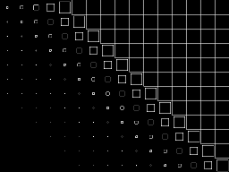
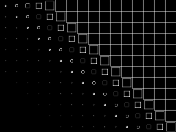

Actions, Transformations and Effects¶
Actions¶
Actions are like orders given to any CocosNode object.
These actions usually modify some the object’s attributes like position, rotation, scale, etc.
For example, the MoveBy action modifies the position attribute along a period of time
Example:
# Move a sprite 50 pixels to the right, and 100 pixel to the top in 2 seconds.
sprite.do( MoveBy( (50,100), duration=2 ) )
The actions behavior related to time classifies them in three groups:
InstantAction: the change is applied in one step Example:# instantly move the sprite to the position (120, 330) sprite.do( Place( (120, 330) ))
IntervalAction: the change is applied in many steps along a time duration that is known at the action instantiation. Example, the above mentioned MoveBy
Action: the change is applied in many steps along the time, but the duration is not know at instantiation time or it is ‘forever’
The IntervalAction actions have some interesting properties:
The timeflow can be modified using the time-altered actions
All the relative actions (the ones ending in ‘By’) and some absolute actions (the ones ending in ‘To’) have a Reverse action that executes the action in the opposite direction.
Basic actions¶
Basic actions are the ones that modifies basic attributes like:
Examples can be seen in test/test_<action name>.py , like test/test_moveby.py for MoveBy action
Special Actions¶
- time related: do nothing along a duration
- flow control: call a specified function. Used usually in conjuction with the sequence operator to express the semantic ‘after action_1 call this function’
- grid helpers: helpers to do grid actions
- camera related
Composition and modification of actions¶
Cocos also provide some powerful operators to combine or modify actions, the
more important being listed below. Runnable examples are named as test_<operator or modifier name>.py
sequence operator: action_1 + action_2 -> action_result
where action_result performs by first doing all that action_1 would do and then perform all that action_2 would do
Example use:
move_2 = MoveTo((100, 100), 10) + MoveTo((200, 200), 15)
When activated, move_2 will move the target first to (100, 100), it will arrive there 10 seconds after departure; then it will move to (200, 200), and will arrive there 10 seconds after having arrived to (100, 100)
spawn operator: action_1 | action_2 -> action_result
where action_result performs by doing what would do action_1 in parallel with what would perform action_2
Example use:
move_rotate = MoveTo((100,100), 10) | RotateBy(360, 5)
When activated, move_rotate will move the target from the position at the time of activation to (100, 100); also in the first 5 seconds target will be rotated 360 degrees
loop operator: action_1 * n -> action_result
Where n non negative integer, action_result would repeat n times in a row the same that action_1 would perform.
Example use:
rotate_3 = RotateBy(360, 5) * 3
When activated, rotate_3 will rotate target 3 times, spending 5 sec in each turn.
repeat forever: Repeat(action_1) -> action_result
where action_result plays action_1, then repeats action_1 each time that action_1 terminates
Example use:
rotate_forever = Repeat(RotateBy(360, 3))
When activated, the target will rotate forever, doing a revolution each 3 seconds
- Time-flow modifiers
- Grid Amplitude modifiers
Effects¶
Effects are a special kind of actions. Instead of modifying normal attributes like opacity, color, position, rotation, or scale, they modify a new kind of attribute: the grid attribute.
A grid attribute is like a matrix, it is a network of lines that cross each other to form a series of squares or rectangles.
These special actions render any CocosNode object (Layer, Scene, etc.) into the grid, and you can transform the grid by moving it’s vertices.
There are 2 kind of grids: tiled grids and non-tiled grids. The difference is that
the tiled grid is composed of individual tiles while the non-tiled grid is
composed of vertex.
The grids has 2 dimensions: rows and columns, but each vertex of the grid has
3 dimension: x, y and z. So you can create 2d or 3d effects by transforming
a tiled-grid-3D or a grid-3D grid.
You can improve the quality of the effect by increasing the size of the grid, but the effect’s speed will decrease.
A grid of size (16,12) will run fast in most computers but it won’t look pretty well. And a grid of (32,24) will look pretty well, but in won’t run fast in some old computers.
How they work¶
Each frame the screen is rendered into a texture. This texture is transformed into a vertex array
and this vertex array (the grid!) is transformed by the grid effects.
Finally the vertex array is rendered into the screen.
- For more information about the internals refer to:
TiledGrid3DandTiledGrid3DActionfortiledgridsGrid3DandGrid3DActionfornon-tiledgrids
For example, if you have an scene or layer that renders this image:

...we can transform that image into this one using the Ripple3D action.
As you can see from the wired image, it is using a grid of 32x24 squares,
and the grid is non-tiled (all the squares are together).

...or we can transform it into this one using the FadeOutTRTiles action.
As you can see from the wired image, it is using a grid of 16x12 squares,
and the grid is tiled (all the squares/tiles can be separated).
 

3D actions¶
Action names that has the ‘3D’ characters on it’s name means that they produce a 3D visual effects by modifying the z-coordinate of the grid.
If you’re going to use any ‘3D’ action, probably you will want to enable the OpenGL depth test. An easy way to do that is by calling the Director’s set_depth_test method.
Index of grid effects¶
- You can find all the Grid3DAction actions here:
- And all the TiledGrid3DAction actions here:
Examples¶
Some examples:
# effect applied on a Scene
scene.do( Twirl( grid=(16,12), duration=4) )
# effect applied on a Layer
layer1.do( Lens3D( grid=(32,24), duration=5 )
# effect applied on a different Layer
layer2.do( Waves( grid=(16,12), duration=4) + Liquid( grid=(16,12), duration=5 ) )
Working samples can be found as test/test_<action name>.py , like test/test_lens_3d.py
Creating your own actions¶
Creating your own actions is pretty easy. You should familiarize yourself with this concepts, because actions are very powerful and can be combined with another actions to create more actions.
For example, there is the Blink action. It is implemented by subclassing IntervalAction, but you could actually do something like:
def Blink(times, duration):
return (
Hide() + Delay(duration/(times*2)) +
Show() + Delay(duration/(times*2))
) * times
Basic Internals¶
All actions work on a target. Its their callers responsibility to set the target to the correct element. This allows the user to instantiate an action and then apply the same action to various different elements. All cocosnodes can be a target for an action.
You will not know who the target is when __init__ or init is called, but you will when start is called. If you are making an action that takes more actions as parameters, it is your responsibility to:
- set the target
- call the start method
- call the stop method
You can also override the __reversed__ method. In this method you have to construct and return an action that would be the reversed version of the action you are doing. For example, in Show() we return Hide() as its reverse:
class Show( InstantAction ):
"<snip>"
def __reversed__(self):
return Hide()
Instant Actions¶
Instant actions are actions that will take no time to execute. For example, Hide() sets the target visibility to False.
It is very easy to create an action using the CallFuncS action as a decorator:
@CallFuncS
def make_visible( sp ):
sp.do( Show() )
self.sprite.do( make_visible )
please note that make_visible will not be a regular function that you can call, it will be an action. So you can compose it like any other action.
- If you want to subclass InstantAction, you will have to override:
- the init method to take the parameters you desire
- the start method to do the action
Thats it.
For example, this is a minimal implementation of SetOpacity:
class SetOpacity( InstantAction ):
def init(self, opacity):
self.opacity = opacity
def start(self):
self.target.opacity = self.opacity
Interval Actions¶
Interval actions is where the fun is. With this actions you can specify transformations that take a finite time. For example, MoveBy(how_much, duration).
- The protocol for IntervalAction subclasses is the following:
- init method will be called. here you have to set your duration property.
- a copy of the instance will be made (you don’t have to worry about this)
- start method will be called (self.target will be set)
- update(t) will most likely be called many time with t in [0,1) and t will monotonically rise.
- update(1) will be called.
- stop() will be called.
So its in update that you do your magic. For example, if you want to fade something out, you can write something like:
class FadeOut( IntervalAction ):
def init( self, duration ):
self.duration = duration
def update( self, t ):
self.target.opacity = 255 * (1-t)
def __reversed__(self):
return FadeIn( self.duration )
The trick is that whoever is running your action will interpolate the values of t so that you get called with t==1 when your duration is up. This does not mean that duration seconds have elapsed, but it usually does. If someone wants to make your action go twice as fast, they can feed you updates at a different rate and you should not care.
Also, this allows us to change the interpolation method. We usually use linear interpolation, but AccelDeccel, for example, uses a sigmoid function so that is goes slower at the ends.
Grid Actions¶
These are IntervalAction actions, but instead of modifying normal attributes like rotation, position, scale, they modify the grid attribute.
Let’s see in detail how to build a basic non-tiled-grid action:
class Shaky3D( Grid3DAction):
Shaky3D is a subclass of Grid3DAction, so we are building a non-tiled action. If we want to create a tiled action, we need to subclass from the TiledGrid3DAction class:
def init( self, randrange=6, *args, **kw ):
'''
:Parameters:
`randrange` : int
Number that will be used in random.randrange( -randrange, randrange) to do the effect
'''
super(Shaky3D,self).init(*args,**kw)
#: random range of the shaky effect
self.randrange = randrange
Our class receives the randrange parameter, so we save it, and we call init of our
super class:
def update( self, t ):
for i in xrange(0, self.grid.x+1):
for j in xrange(0, self.grid.y+1):
x,y,z = self.get_original_vertex(i,j)
x += random.randrange( -self.randrange, self.randrange+1 )
y += random.randrange( -self.randrange, self.randrange+1 )
z += random.randrange( -self.randrange, self.randrange+1 )
self.set_vertex( i,j, (x,y,z) )
Like any other IntervalAction action the update method is going to be
called once per frame. So, our Shaky3D effect will modify the x,``y``
and z coordinate by a random number that is calculated by the
random.randrange function.
The get_original_vertex method returns the original coordinates of the vertex
x and y, while the get_vertex method returns the current coordinates
of the vertex x and y.
XXX: Explain how to build a Tiled Action XXX: How to use: get_original_tile and get_tile